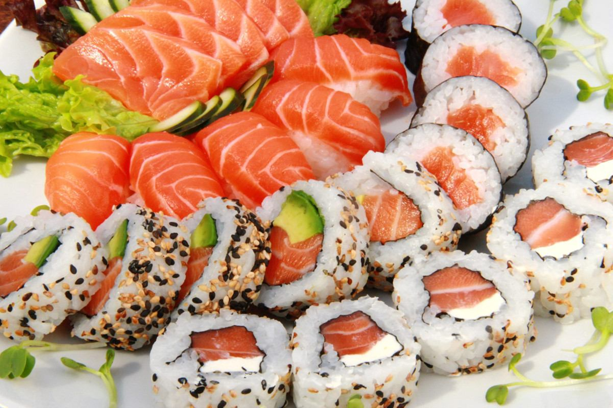
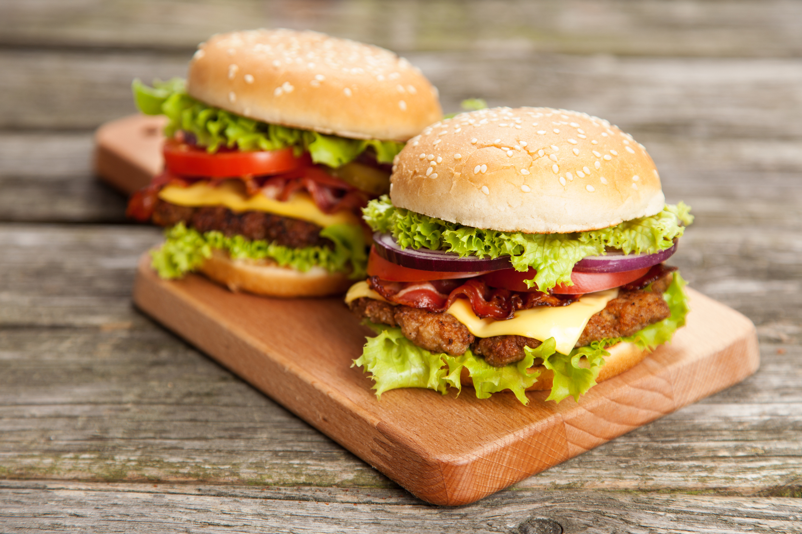
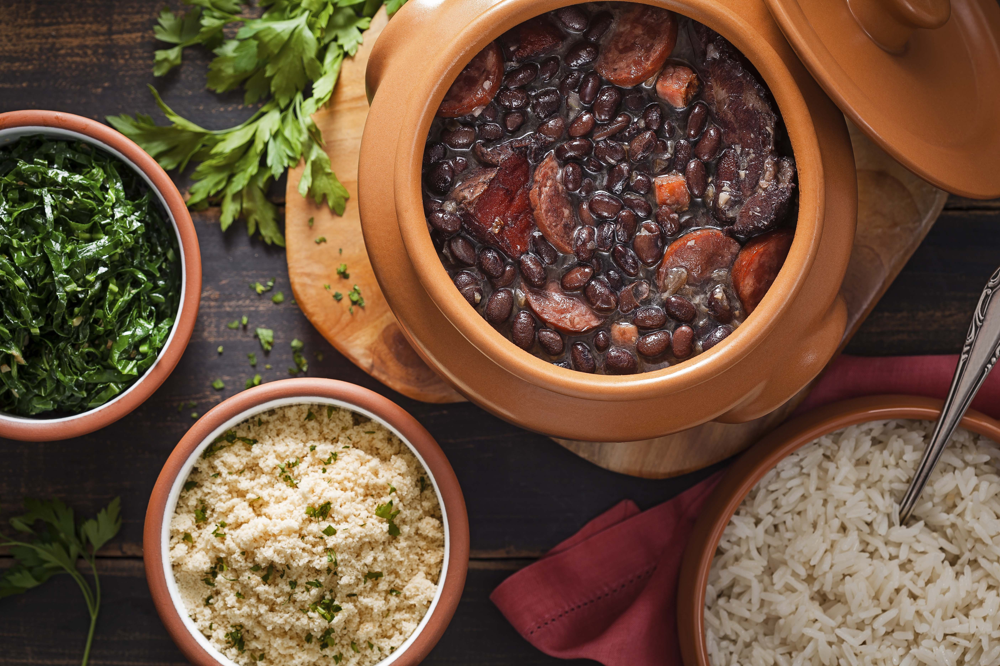

Receitas Populares

Sushi
Prato japonês com arroz temperado e peixe cru ou frutos do mar. Popular em todo o mundo.
Veja a Receita!
Paella
Prato espanhol com arroz, frutos do mar, carnes, legumes e temperos. Associado a festividades.
Veja a Receita!

Hamburger
Bife de carne moída grelhado, servido em pão com acompanhamentos. Ícone da culinária americana.
Veja a Receita!Pad Thai
Prato tailandês com macarrão de arroz frito, camarão ou frango, legumes e molho agridoce. Sabor equilibrado.
Veja a Receita!Curry
Prato indiano com especiarias, legumes e carne cozidos em molho de leite de coco ou iogurte. Apreciado globalmente.
Veja a Receita!

Feijoada
Prato brasileiro com feijão preto, carnes defumadas, acompanhamentos como arroz, farofa, couve e laranja. Considerado prato nacional.
Veja a Receita!Tabela de receitas
| Receita | Tempo de Preparo | Quantidade Servida |
|---|---|---|
| Sushi | 30 minutos | 1-2 Pessoas |
| Paella | 1 Hora | 4-6 Pessoas |
| Hamburger | 20-30 Minutos | 1 Pessoa |
| Pad Thai | 30-40 minutos | 2-3 Pessoas |
| Curry | 45 Minutos | 4-6 Pessoas |
| Feijoada | 2 Horas e 30 Minutos | 8-10 Pessoas |